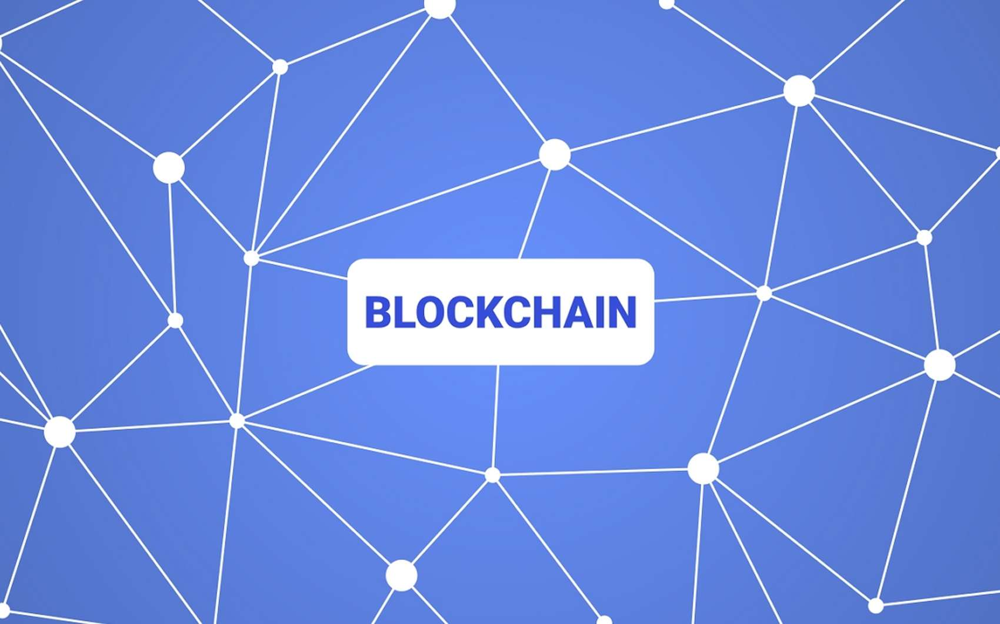

CZYM JEST BLOCKCHAIN?

Blockchain, czyli inaczej łańcuch bloków jest technologią, która służy do przesyłania i przechowywania informacji o transakcjach internetowych, czyli jest to coś na kształt cyfrowej księgi transakcji. Informacje te zostają ułożone w postaci następujących po sobie bloków danych. Jeden blok zawiera informacje o określonej liczbie transakcji, następnie po jego nasyceniu tworzy się kolejny blok danych itd. Wielu ekspertów prognozuje, że rozwiązania oparte na blockchainie mogą znacząco wpłynąć nie tylko na świat technologii, ale też na funkcjonowanie instytucji finansowych np. kupnie i sprzedaży walut czy kryptowalut
Bit Hotel (BTH) to nadchodząca gra blockchain typu play-to-earn o charakterze społecznym. Projekt znajduje się w sekcji metaverse gier o wysokim potencjale i niesie obietnicę rywalizacji z innymi popularnymi grami blockchain, takimi jak Axie Infinity. Natywny token BTH jest główną walutą w grze i może być również używany do zarządzania. W momencie pisania tego tekstu, BTH był handlowany za 0,1808 USD.
RMRK to projekt ekosystemu Kusama (oraz Polkadot), który tworzy coś, co nie bez powodu nazywane jest NFT 2.0. Dzięki temu jak działa pozwala tworzyć zaawansowane rozwiązania w zakresie tokenów niezamiennych, które już dziś z powodzeniem są wykorzystywane przez kilka projektów. Projekt zapowiedział też swoje metawersum, gdzie oczywiście natywną walutą będzie RMRK. Projekt wprowadza koncepcję lego NFT - proste, prymitywne komponenty standardu, które po połączeniu mogą stworzyć nieskończenie złożony projekt. Dlaczego tokeny niezamienne od RMRK są wyjątkowe? Ponieważ NFT mogą posiadać… inne NFT. Jest to koncept bardzo przydatny przy tworzeniu wielu rozwiązań, głównie w obrębie jednej z głównych narracji 2022 roku, czyli metawersum i gier.
Pulse Prediction Markets (PULSE) jest innowacyjnym DApp zbudowanym na ekosystemie NEAR. Aplikacja ma na celu wykorzystanie mocy Flux Oracle do rozwiązywania typowych problemów rynku predykcyjnego oraz zapewnienia dostępnych i wydajnych platform dla użytkowników. Projekt jest prowadzony przez handlowców za pomocą Pulse DAO, gdzie natywny token zarządzania znany jako PULSE jest używany do wpływania na decyzje administracyjne. Jako jeden z głównych projektów NEAR, Pulse jest wciąż w fazie początkowej i oferuje znakomity potencjał przyszłego wzrostu. W momencie pisania tego tekstu kurs Pulse wynosił 0,1589 USD, co oznacza wzrost o prawie 25% w ciągu 24 godzin.
Nazwa mówi sama za siebie. Secret Network pozwala tworzyć aplikacje i NFT, które są całkowicie prywatne, a także pozwala na anonimowe transfery i wymiany. Potencjał takich rozwiązań dostrzegł… Quentin Tarantino, a świetnym przykładem jest niedawno uruchomiony rynek NFT Stashh. Co więcej, SCRT przy tym wszystkim, na co pozwala nie jest private coinem więc (teoretycznie) nie grozi mu banicja z dużych giełd. Secret Network planuje ogromną ekspansję w roku 2022 roku. Mówi się o co najmniej 100 projektach budujących w sieci, a wspomina nawet o 1000, które mają pojawić się w 2022 roku. Dodatkowo niedawna implementacja IBC wprowadziła Secret w wielołańcuchowy świat Cosmos.
Jeden z najważniejszych projektów rynku kryptowalut, kluczowy dla wielu aplikacji (nie tylko DeFi), zabezpieczający dziesiątki miliardów dolarów wartości i łączący wiele znanych, ogromnych firm ze świata rzeczywistego z blockchainem i smart kontraktami. Rozwój technologii (opisany w Chainlink 2.0), ekosystemu i partnerstw w świecie rzeczywistym Chianlink w 2021 był ogromny, jednak cenowo LINK nie zrobił niczego wyjątkowego, wręcz przeciwnie. Jeśli chodzi o to gdzie teraz znajduje się token LINK, to jest mniej więcej tam gdzie… na początku 2021 roku. Chainlink zawiódł wiele osób w mijającym roku brakiem eksplozji ceny, ale fundamentalnie jest to absolutnie kluczowy gracz na rynku DeFi i NFT. Jednym z najważniejszych wydarzeń nadchodzącego roku może być wprowadzenie oczekiwanego przez wszystkich, rewolucyjnego stakingu LINK.
Ta strona nie powstałaby gdyby nie pomoc:
DANIELA <3
1.
2.
3.
4.
5.
6.